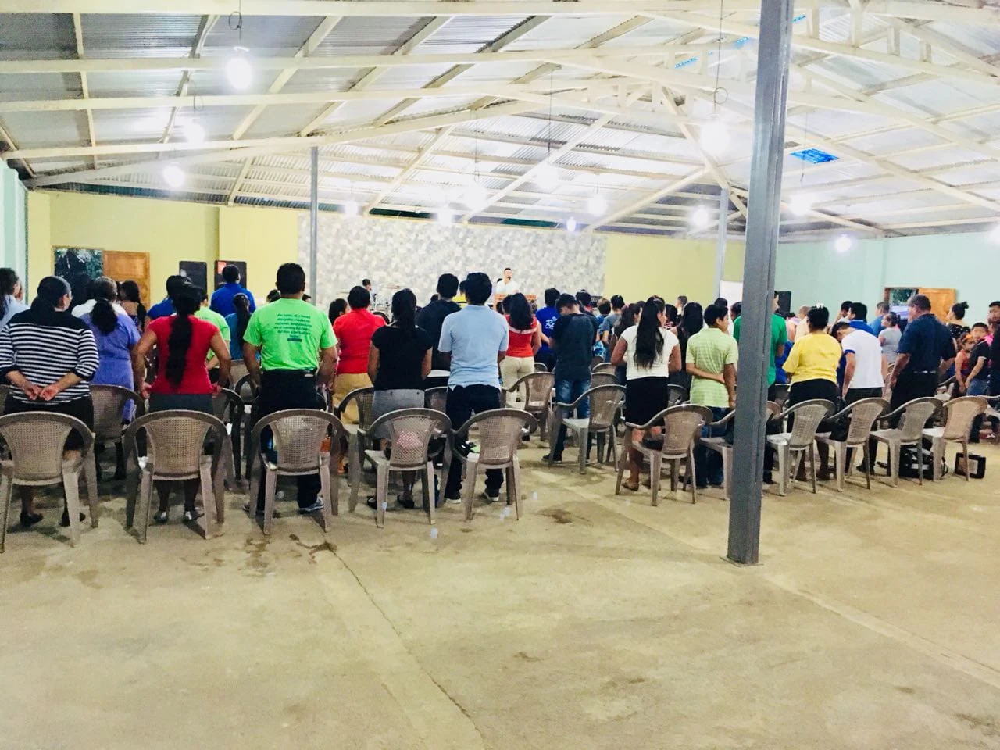

Vive en comunidad
Nuestros ministerios
Toca un grupo para conocer horarios, líderes y para quién es.
Somos una familia de fe que cree en un Dios cercano. Aquí encontrarás horarios, ministerios y un espacio para tus peticiones de oración — sin importar si es tu primera visita o llevas años con nosotros.

Clases para niños, jóvenes y adultos, por edades. Empieza puntual.
Alabanza, predicación y Santa Cena el primer domingo de cada mes.
Alabanza, predicación y Santa Cena el primer domingo de cada mes.
Un espacio íntimo para orar juntos y profundizar en la Palabra.
Música, dinámicas y un mensaje pensado para la nueva generación.
Iglesia Nueva Vida nació hace más de una década, cuando un pequeño grupo de familias comenzó a reunirse en una casa con un mismo propósito: ser luz para su barrio. Con el tiempo, esa reunión creció hasta convertirse en la comunidad que somos hoy.
Guiar a las personas hacia una relación real con Dios, formar discípulos que sirven a su comunidad y ser una fuente de vida nueva para quien esté buscando un lugar al cual llegar.
Toca un grupo para conocer horarios, líderes y para quién es.
¿Necesitas que oremos por ti o por tu familia? Escríbenos de forma privada — nuestro equipo de oración recibe tu petición con confidencialidad.
💬 Enviar por WhatsApp¿Prefieres escribirlo con calma? También puedes usar este formulario (conéctalo a un Google Form).
Una reflexión corta sobre cómo sostener la fe en los días difíciles, basada en la enseñanza del domingo pasado.
Los puntos clave de la enseñanza sobre Santiago 2, para quienes no pudieron asistir o quieren repasarla.